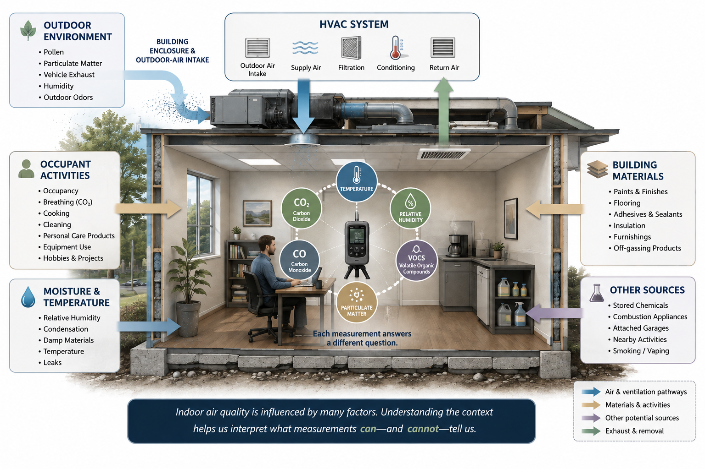

Indoor air is influenced by the building itself, its heating and cooling systems, outdoor conditions, materials and furnishings, occupant activities, moisture, ventilation, temperature, and many other factors. Some conditions can be measured directly. Others are better understood through observation, comparison, or more specific testing.
01 · The System
The Indoor Environment Is a System
A building is not isolated from its surroundings. Outdoor air enters through intentional ventilation, open doors and windows, and small openings throughout the building enclosure. Heating and cooling systems move air between spaces. Building materials, furnishings, cleaning products, equipment, and occupant activities can introduce substances into the indoor environment.
Temperature and humidity influence how the space feels and how materials behave. Moisture conditions can affect building materials and, under appropriate conditions, contribute to microbial growth.
Even occupancy changes the environment. People produce heat, moisture, and carbon dioxide simply by being present. Cooking, cleaning, maintenance, hobbies, equipment operation, and other activities may temporarily change what can be detected in the air.
These factors do not operate independently. A change in ventilation may affect carbon dioxide concentrations. Outdoor conditions may influence indoor particulate levels. Temperature may affect relative humidity. Building pressure can change where air enters and leaves a space.
Indoor air quality is a system, not a single number.
Understanding that system is often more useful than searching for one measurement that can declare the air either “good” or “bad.”

02 · Measurement
What Can We Measure?
Direct-reading instruments can provide valuable information about indoor environmental conditions. Depending on the investigation and equipment being used, measurements may include:
Temperature
Helps characterize thermal conditions and provides context for humidity, condensation, comfort, and building operation.
Relative Humidity
Describes the amount of moisture in the air relative to what the air can hold at its current temperature.
Carbon Dioxide (CO₂)
May provide useful information about occupancy and ventilation patterns when interpreted in context.
Carbon Monoxide (CO)
A combustion-related gas that may require particular attention because elevated concentrations can present a serious health hazard.
Particulate Matter
Airborne particles that may originate indoors or outdoors and vary considerably in size and source.
Volatile Organic Compounds (VOCs)
A broad category of chemicals that may be associated with products, materials, activities, or other sources.
Each measurement provides information, but each answers a different question. A temperature reading does not describe particulate matter. A particulate measurement does not identify every airborne particle. A total VOC reading does not necessarily tell us which individual compounds are present. And a carbon dioxide measurement is not a comprehensive measurement of indoor air quality.
A measurement tells us what the instrument detected. Context helps tell us what the measurement means.
A number by itself doesn't tell the whole story.
03 · Limits
Measurements Have Limits
Every measurement has boundaries. Instruments are designed around particular sensors, detection ranges, sensitivities, and operating conditions. Some provide highly specific measurements. Others provide broader screening information.
For example, an instrument reporting a total VOC value may indicate that compounds detectable by its sensor are present, but the reading may not identify the individual compounds contributing to that value. Likewise, a particulate monitor may describe the amount of airborne particulate matter present during the measurement period without necessarily identifying what those particles are.
Some environmental questions cannot be answered adequately with a direct-reading instrument at all. They may require laboratory analysis, targeted sampling, specialized equipment, or evaluation by another discipline.
Not detecting something with one instrument does not establish that nothing is present.
Detecting something does not automatically establish that it represents an unacceptable condition.
The instrument provides evidence. The investigation determines how that evidence fits into the larger picture.
04 · Context
The Building Provides Context
Measurements become more useful when we understand the building in which they were collected. Two rooms with different environmental readings may differ because of occupancy, ventilation, outdoor-air influence, materials, equipment, cleaning activity, or HVAC operation.
Without context, those measurements are simply different numbers. An indoor air quality investigation may therefore consider questions such as:
None of those questions automatically identifies a cause. Together, however, they begin to describe the environment in which the measurements were collected.
05 · Patterns
Patterns Tell Us More Than Snapshots
A single measurement describes a particular condition at a particular moment. Sometimes that is exactly what is needed. Other times, the pattern surrounding the measurement is more informative than the number itself.
Indoor and outdoor measurements may be compared. Occupied and unoccupied areas may behave differently. Conditions near an HVAC supply may differ from those elsewhere in a room. A reading collected during an activity may change after that activity stops.
The reading tells us what was measured. The pattern helps tell us what to investigate next.
06 · Occupant Observations
When Occupants Notice Something
People who spend time in a building are often the first to notice when something changes. They may report an unusual odor, stuffiness, irritation, headaches, discomfort, or symptoms that appear to occur more often in a particular location or at a particular time.
Those observations can help identify when a condition occurs, which spaces warrant closer evaluation, whether the concern coincides with particular activities, or whether something in the building has recently changed.
But occupant observations and environmental conclusions are not the same thing. Many symptoms and perceptions can have multiple possible explanations, and an environmental investigation is not a medical diagnosis. Its role is to evaluate the environment.
Occupant observations can help identify where and when to investigate. They do not, by themselves, establish an environmental cause.
07 · Reference Values
What Does “Normal” Mean?
One of the most common questions in indoor environmental work is also one of the most difficult: “What's the acceptable level?”
Sometimes there is a clear answer. Certain substances have regulatory limits, occupational exposure limits, health-based guidelines, manufacturer specifications, or other established criteria that may be relevant in a particular situation.
But not every indoor environmental measurement has one universally applicable threshold separating “acceptable” from “unacceptable.” And even when a reference value exists, its purpose matters. A limit developed for an occupational setting may not have been designed to evaluate a residence. A short-term exposure value may answer a different question than a long-term guideline. A comfort recommendation is not the same thing as a health-based exposure limit.
A number becomes meaningful only when the comparison itself is meaningful.
08 · Next Questions
When More Specific Testing Is Needed
Sometimes an initial investigation answers the question. Sometimes it identifies a better question.
A pattern in direct-reading measurements might suggest that ventilation deserves closer evaluation. Moisture observations may indicate the need for a moisture investigation. An odor or activity may justify targeted chemical analysis. Suspected microbial conditions may require more specific evaluation or sampling.
Depending on the circumstances, additional investigation might include laboratory air sampling, surface sampling, targeted chemical analysis, HVAC evaluation, moisture assessment, combustion-system evaluation, or another specialized discipline.
More testing is not automatically better. Testing should have a purpose. Before collecting another sample or measurement, it is worth asking: What question will this information help answer?
The purpose is to answer the next useful question.
09 · Perspective
Understanding Before Acting
Indoor air quality investigations bring together many kinds of information: building conditions, HVAC operation, outdoor influences, occupant activities, environmental measurements, visual observations, and patterns over time and space.
No single piece necessarily explains the entire environment. The goal is not to collect the greatest possible number of measurements or to search until something unusual is found.
The goal is to collect enough relevant information to understand what the evidence supports, recognize what remains uncertain, and determine what should happen next. That may lead to corrective action. It may lead to additional investigation. And sometimes, it may simply provide evidence that the conditions evaluated do not indicate the problem that was originally suspected.
A useful investigation doesn't require us to find something wrong.
The value of an investigation is not measured by whether it discovers a problem. It is measured by whether it helps us understand the environment more clearly.
The findings should say what the evidence supports—and no more.
The goal isn't to collect as many measurements as possible. The goal is to collect the information needed to understand the condition.
Good decisions begin with good observations.